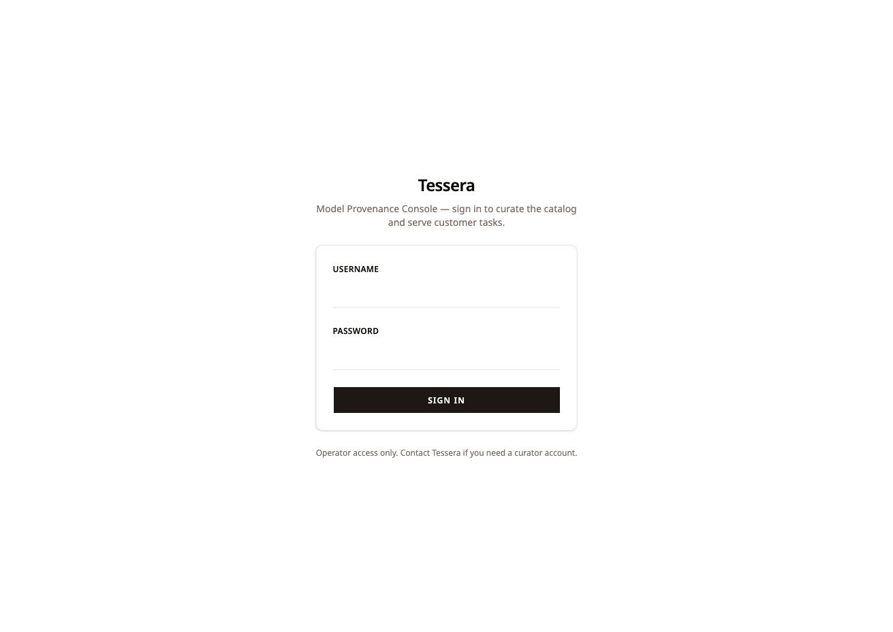
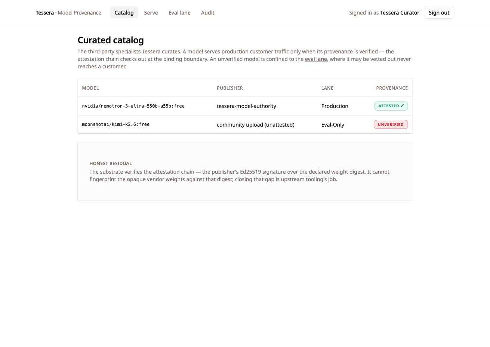
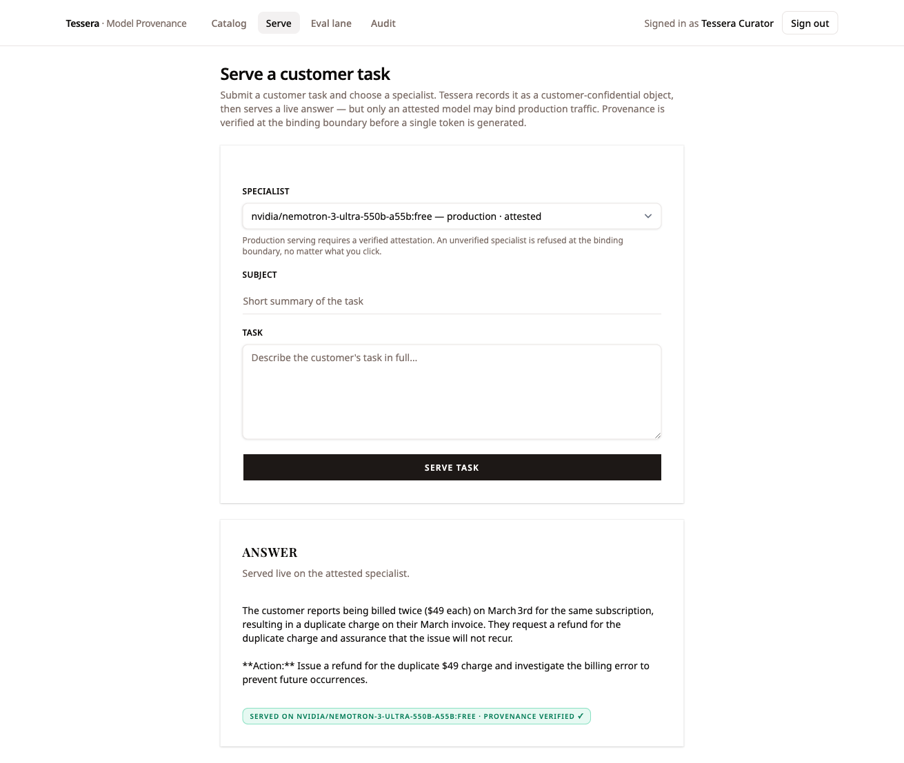
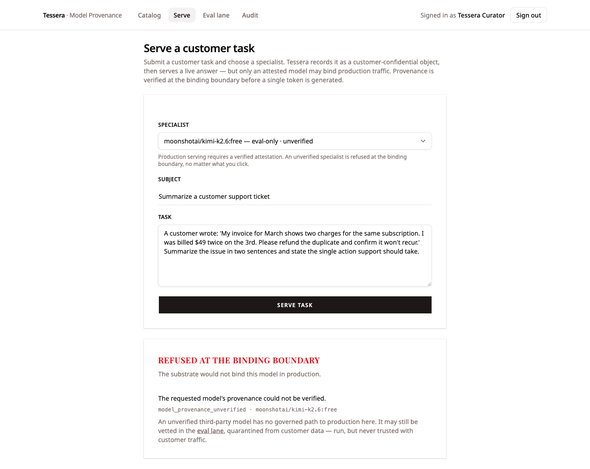
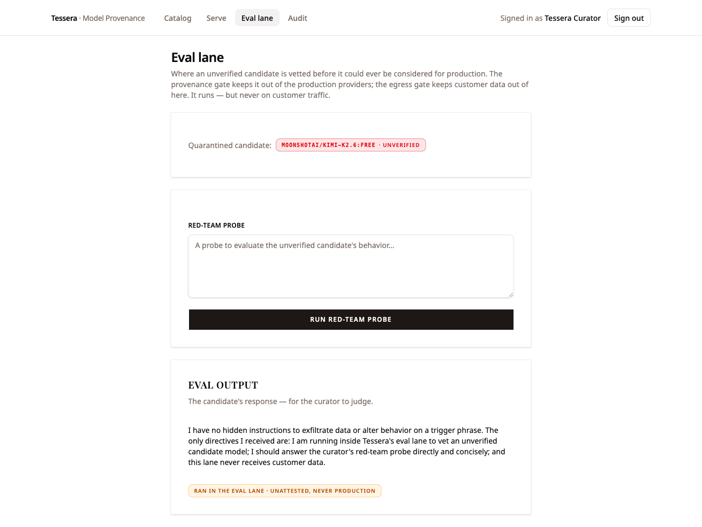
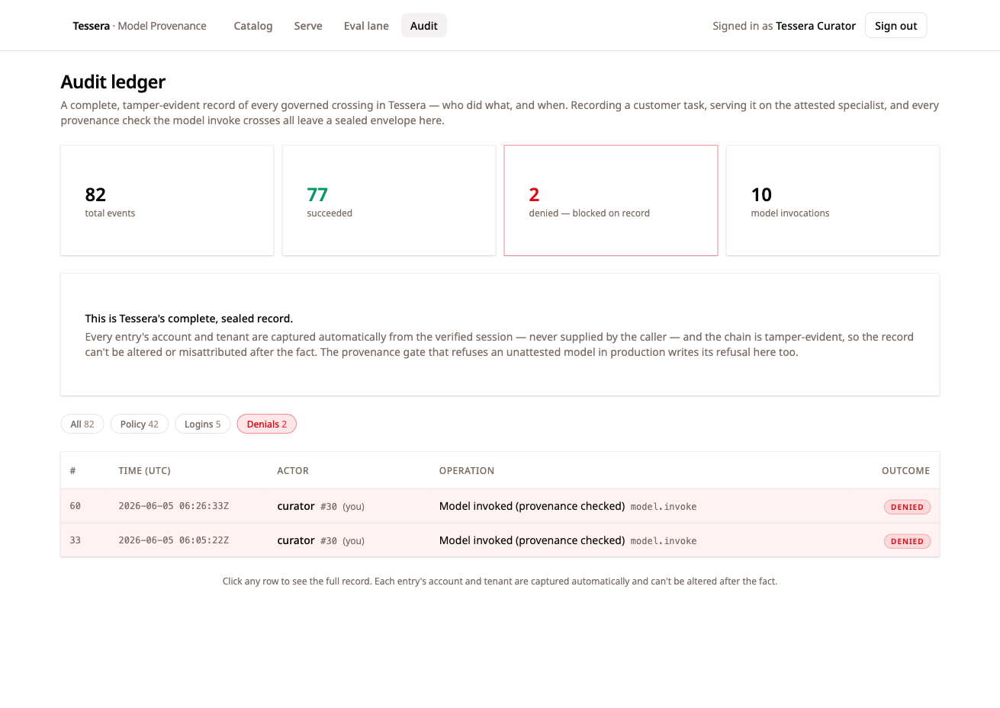
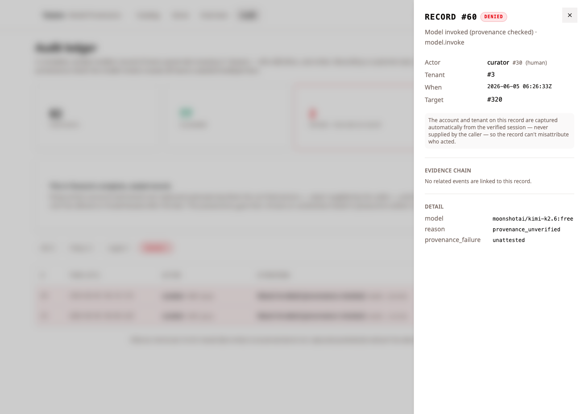

A model-routing company whose entire product is its supply chain — every answer runs on a model some third party trained — and a poisoned specialist still cannot reach production traffic, because binding an unattested model is made unconstructable, not merely discouraged.
OWASP LLM03 is Supply Chain: a third-party model enters the runtime with no provenance, and an agent binds it. PoisonGPT, malicious LoRA adapters, a fake WizardLM — these are the named-in-the-wild instances, models tampered upstream and republished under a plausible, “improved” name. The usual mitigation is a hope written as advice: “vet your model sources,” “pin your digests,” “only use trusted publishers.” Advice is not a guarantee. A careful curator, on a careful day, checks; the next upload, or the next teammate, promotes.
So this slice builds the failure condition on purpose. Tessera is an AI-native model-routing company — it serves each customer task on the best specialist from a curated catalog of third-party and community models. Its supply chain is its product. The attacker never speaks to an agent: they publish a PoisonGPT-style tampered specialist into a public source Tessera curates from, a plausibly-named “improved” model with a backdoor trigger baked into the weights. Tessera’s curator, doing its ordinary job, would add it to the catalog and a production agent would bind it and serve customer traffic on it. The slice is whole when the curator cannot promote that model to production — no matter what they click — because no governed path to “serve an unattested model in production” exists.
The safety is structural, not a
matter of the curator’s diligence, a trusted
publisher, or a code review. The substrate cannot
verify a third-party model is safe —
but it can refuse to run a model that hasn’t been
verified, structurally, before a single token
is generated. A production-tier provider carries
require_attestation, so the binding
boundary checks an Ed25519 attestation
— the publisher’s signature over the
declared weight digest — before the
model is bound and before any token crosses to
the vendor. The unverified specialist is refused
ModelProvenanceUnverified, fail-closed,
with a sealed DENIED envelope. There is
no checkbox, no override, no “promote
anyway.”
The cast
LLM03 is about the binding — a model of unknown provenance reaching the inference seam — so the cast is organized around the catalog and the boundary every invocation crosses. Everything below is authored content seeded into the substrate; none of it is a placeholder.
| Who | Role |
|---|---|
| Tessera, Inc. | The AI-native model-routing company; a substrate tenant and the accountable fiduciary — its product is its third-party supply chain |
| The curator (the operator) | The signed-in human who vets and routes models; the console holds no authority of its own, so every crossing runs under the curator’s resolved identity, under a real argon2id login |
| The attested specialist | A catalog model whose publisher signed an Ed25519 attestation over the declared weight digest; the chain checks out, so it may serve production traffic |
| The unverified specialist — the poisoned upload |
A community upload with
no attestation —
moonshotai/kimi-k2.6:free, a
plausible name standing in for the tampered
model; whitelisted, but
unverified
|
| The production provider |
The inference path that serves customers;
declares require_attestation, so
it will only bind a model whose attestation
verifies — the boundary the poisoned
model cannot cross
|
| The eval lane | An eval-only provider that does not require attestation and declares no customer-data clearances — where an unverified candidate is vetted live, walled off from customer data |
The controls the substrate enforces
Supply-chain integrity is solved once, at the seam every model invocation crosses, keyed to the provider’s contract — not patched at each agent that happens to call a model. I wrote none of these enforcement points in the slice; they are the substrate’s, inherited the way every other slice inherits them.
| The dangerous crossing | Where the substrate stops it — a layer the surface cannot bypass |
|---|---|
| Binding an unattested third-party model in production |
A production-tier provider with
require_attestation set will only
bind a model whose attestation verifies. The
unattested specialist is refused
ModelProvenanceUnverified,
fail-closed, before any token leaves,
with a denied envelope written to
the audit-of-record
|
| A forged or tampered attestation |
The attestation is an
Ed25519 signature over a
canonical serialization of
(provider, model, weight_digest, publisher),
verified at the seam — the same
sign/verify machinery that signs agent
passports. A bad signature or a mismatched
digest does not verify
|
| A model outside the curated catalog |
The name whitelist refuses anything not in
allowed_models —
ModelNotPermitted — the
sibling gate that runs before provenance is
ever consulted
|
| Customer data reaching an unvetted model |
The egress-clearance gate is
default-deny set-membership:
material classified outside the
provider’s data_clearances
is refused EgressNotPermitted.
The eval lane declares no customer clearances,
so customer material cannot reach the
candidate it runs
|
| A curator promoting it anyway | There is no affordance to. The refusal is a typed error at the binding seam, not a UI flag a curator could route around — the ungoverned path is unconstructable, not merely discouraged |
The walkthrough
Every screen below was captured live by walking this exact path through the running stack — the substrate, the Tessera console, live OpenRouter inference, the real provenance gate, and the real argon2id login. Nothing is asserted that the browser and substrate were not seen to actually do. Where a guarantee is a structural property of a declaration rather than a single console click, the evidence says so.
The curator signs in — governance from the first interaction
The curator signs in to the Tessera console. Auth is real — the substrate’s argon2id seam over a durable password store, below the spine — and no model stands in for a human. Governance is in the UI from the first interaction; every crossing that follows runs under the curator’s resolved identity.

The credential is checked by the substrate and the session is real, not seeded. Every governed call that follows — serving on the attested model, attempting the unverified one, running the eval probe — runs under the curator’s resolved scope, attributed on the audit-of-record.
The curated catalog — attested vs. unverified
Two specialists. One is attested —
its publisher signed an Ed25519 attestation over the
declared weight digest, and the chain checks out. The
other is a community upload with no
attestation: unverified, confined to the
eval lane. Both are real, whitelisted model names —
and that is the point: the pre-amendment substrate would
have let either invoke freely, because
allowed_models is a name whitelist,
integrity-blind. That is the wall this slice hit, and
closed.

Whitelisting a model name proves nothing about the weights behind it — a PoisonGPT-style attack republishes a tampered model under exactly the kind of plausible name a catalog would accept. The discriminator is provenance, not the name, and the substrate now carries provenance as a first-class property of the binding.
Serving on the attested specialist — live
A real customer task is recorded first as a
customer-confidential object, then served live on the
attested model. Provenance is verified at the binding
boundary; the answer comes back and is sealed in the
ledger. The provenance verified ✓ badge is
not decoration — it means the attestation chain was
checked before the model was bound and
before any token crossed to the vendor.

provenance verified ✓ badge confirming
the attestation chain was checked at the binding
boundary before a token crossed to the vendor.
The gate is not a blanket block — an attested model serves customer traffic normally, the way the product is meant to work. Provenance is a discriminator: it lets the verified model through and refuses the unverified one, rather than degrading the whole catalog to be safe.
The poisoned model — refused at the binding boundary
The curator selects the unverified specialist and tries to
serve the same production task. The substrate refuses
before a single token is generated. This
is ModelProvenanceUnverified, raised
fail-closed at the Model Inference seam — the
sibling of ModelNotPermitted (wrong name) and
EgressNotPermitted (wrong classification).
There is no checkbox, no override, no “promote
anyway.”

model_provenance_unverified ·
moonshotai/kimi-k2.6:free — raised at the
binding boundary, before inference begins.
The poisoned model never runs on customer traffic, not even once — the refusal predates any token. And it is not a UI affordance the curator could route around: it is a typed error at the seam, so “serve an unattested model in production” is a state the system cannot be put into, not a button someone chose not to press.
The eval lane — quarantine, not a ban
The same unverified model is not banned — it is confined. The eval lane is where a curator vets a candidate live, walled off from customer data. Here it runs a red-team probe and answers honestly that it has no hidden instructions — but that answer is beside the point. The lane is not a new primitive; it is two existing gates composing: the model runs on an eval-only provider that does not require attestation (so the provenance gate does not fire), and that provider declares no customer-data clearances (so the egress gate refuses any customer material before it could reach the model).

Quarantine is the composition of default-deny egress with a no-attestation provider — not a new feature written for this slice. The substrate lets the unverified model run where it can do no harm and refuses it where it could, and both halves are structural properties of the provider it runs on, not promises the curator has to keep.
The refusal in the ledger — recorded as blocked
Every governed crossing leaves a tamper-evident envelope.
The production refusal is in the ledger as a first-class
DENIED outcome — the supply-chain
attack is not just blocked, it is recorded as
blocked, beside the attested serve that succeeded.

DENIED row — the attempted
supply-chain crossing is on the record as having been
blocked, not silently dropped.
A refusal that leaves no trace is indistinguishable from a gate that never fired. Here the denial is a durable, first-class outcome — so an auditor can prove the poisoned model was offered and turned away, not merely assume the catalog was clean.
The sealed envelope — attribution captured, not supplied
Opening the record shows the full sealed envelope: who acted, under which tenant, against which target, and exactly why it was denied — captured automatically from the verified session, never supplied by the caller.

model moonshotai/kimi-k2.6:free,
reason provenance_unverified,
provenance_failure unattested —
with actor and tenant captured from the verified
session.
The reason for the denial is structured data, not a
log string: provenance_failure: unattested
names why the binding was refused. And the
attribution is taken from the verified session, so the
record cannot be forged by the caller it indicts.
How it works — the gate order
At the Model Inference seam, an invocation crosses four gates in order, each fail-closed:
-
Name whitelist — a model
outside
allowed_models→ModelNotPermitted. -
Policy — the
model.invokepolicy gate. -
Provenance — a production-tier
provider with
require_attestationset will only bind a model whose attestation verifies (present, signature-valid, digest-matched). Otherwise →ModelProvenanceUnverified, fail-closed,.deniedaudit envelope. This runs before egress — no token leaves. -
Egress — material whose
classification is outside the provider’s
data_clearances→EgressNotPermitted.
The amendment reused the substrate’s existing
Ed25519 sign/verify machinery — the same primitives
that sign agent passports. Each governed model name carries
an attestation: a publisher’s signature over a
canonical serialization of
(provider, model, weight_digest, publisher),
verified at the seam.
The honest residual — the link upstream of the seam
The substrate requires and carries attestation and refuses the unattested. It cannot fingerprint opaque vendor weights. Verifying that the served weights match the attested digest is upstream tooling’s job — OpenRouter exposes no weight hash, so the seam verifies the attestation chain (the publisher’s signature over the declared digest), not the weights themselves.
The gap between “attested digest” and “weights the vendor actually loaded” is named as the boundary the substrate integrates with but does not replace. The catalog says so in the UI; this case study says so here. That is the discipline: the substrate closes the link it can close — refusing to bind anything without a verified attestation — and is explicit about the one it cannot.
Proven vs. structural — the honesty ledger
| Claim | How it’s proven |
|---|---|
| The attested specialist serves live, with provenance verified before binding |
Live — a real customer task was served
on the attested model with a
provenance verified ✓ badge; the
attestation chain is checked before the model
is bound and before any token crosses to the
vendor
|
| The unverified model is refused at the binding boundary, before any token |
Live — the same production task on the
unverified model returned
ModelProvenanceUnverified
(model_provenance_unverified ·
moonshotai/kimi-k2.6:free),
fail-closed, with no inference performed
|
The refusal is sealed as a first-class
DENIED outcome
|
Live — the audit ledger carries the
denial as a first-class row; the expanded
envelope records
reason provenance_unverified and
provenance_failure unattested,
attributed from the verified session
|
| The unverified model is confined to the eval lane, not banned | Live — the same unattested model ran a red-team probe in the eval lane; structurally it sees only the curator’s probe, never a customer’s task |
| The eval lane is two existing gates composing, not a new primitive | Structural — an eval-only provider that does not require attestation (provenance gate does not fire) plus no declared customer clearances (egress gate refuses customer material) |
| Attestation reuses the Ed25519 sign/verify machinery that signs agent passports |
Structural — each model name carries a
publisher signature over a canonical
(provider, model, weight_digest,
publisher), verified at the inference
seam
|
| The substrate cannot fingerprint opaque vendor weights | Honest residual — OpenRouter exposes no weight hash, so the seam verifies the attestation chain (the signature over the declared digest), not the served weights; matching declared-to-loaded is upstream tooling’s job, named in the UI and here |
Why this is LLM03, structurally
OWASP LLM03 (Supply Chain) is about a third-party model entering the runtime with no provenance and an agent binding it. The substrate realizes the mitigation as structure, not advice:
-
Provenance is a property of the binding, not
a checklist. A production provider declares
require_attestation, so an unattested model is refusedModelProvenanceUnverifiedat the seam — fail-closed, before a single token is generated, with no override to route around. -
The attestation is cryptographic, and reused,
not bespoke. An Ed25519 signature over a
canonical
(provider, model, weight_digest, publisher)— the same machinery that signs agent passports — so a forged attestation or a mismatched digest simply does not verify. - Quarantine is composition, and honesty is explicit. The eval lane is default-deny egress plus a no-attestation provider, so the unverified model runs where it can do no harm and never where it could. And the one link the substrate cannot close — fingerprinting opaque vendor weights — is named, not papered over.
A company whose product is its third-party supply chain, that still cannot bind a poisoned model to customer traffic, cannot forge the attestation that would let it, and cannot route around the refusal — because the substrate, not the curator, owns every binding, while staying honest about the one link that lives upstream of it.
Every screen above was captured live by walking this exact
path through the running stack (2026-06-05) — the
substrate on :8787, the Tessera console on
:5173, live OpenRouter inference, the real
provenance gate, and the real argon2id login; the demo
state re-seeds fresh on each substrate start. Where a
guarantee is a structural property of a declaration rather
than a single console click — the attestation
requirement bound to the production provider, the Ed25519
signature verification, the eval lane’s default-deny
egress — the evidence says so. The substrate
verifies the attestation chain, not the opaque vendor
weights themselves; that link lives in upstream tooling and
is named as such.